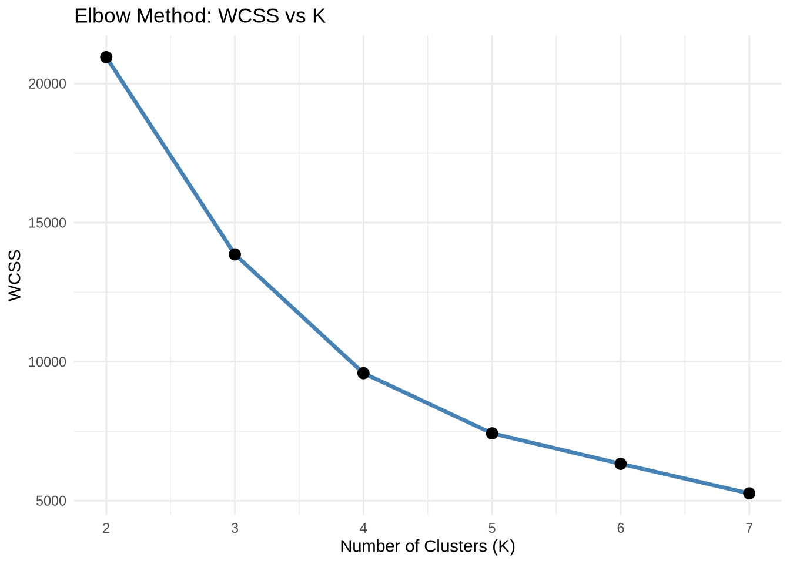
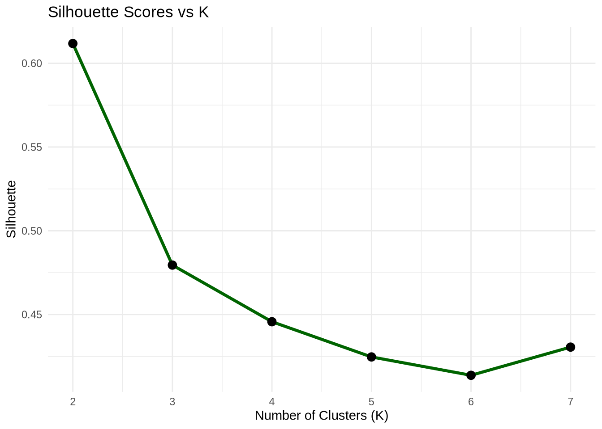

ggplot(wcss_df, aes(x = K, y = WCSS)) +geom_line(color ="steelblue", size =1.2) +geom_point(size =3) +labs(title ="Elbow Method: WCSS vs K", x ="Number of Clusters (K)", y ="WCSS") +theme_minimal()
Warning: Using `size` aesthetic for lines was deprecated in ggplot2 3.4.0.
ℹ Please use `linewidth` instead.

Step 3.3: Plot Silhouette Scores
ggplot(sil_df, aes(x = K, y = Silhouette)) +geom_line(color ="darkgreen", size =1.2) +geom_point(size =3) +labs(title ="Silhouette Scores vs K", x ="Number of Clusters (K)", y ="Silhouette") +theme_minimal()

Recommendations
Elbow Method (WCSS)
The plot showed a sharp drop from K = 2 to K = 3, after which the reduction in WCSS slowed.
This indicates an elbow at K = 3, which often suggests that K = 3 captures the main structure in the data.
Silhouette Score
The highest average silhouette score was observed at K = 2, indicating that the data points are more clearly and tightly grouped when divided into 2 clusters.
Silhouette scores typically favor compact and well-separated clusters.
Final Recommendation:
Metric Suggested K Elbow Method 3 Silhouette Score 2
Therefore, K = 2 is recommended as the “right” number of clusters, because it yields the best separation and tightest clusters according to the silhouette score, which is a more interpretable metric for cluster quality.